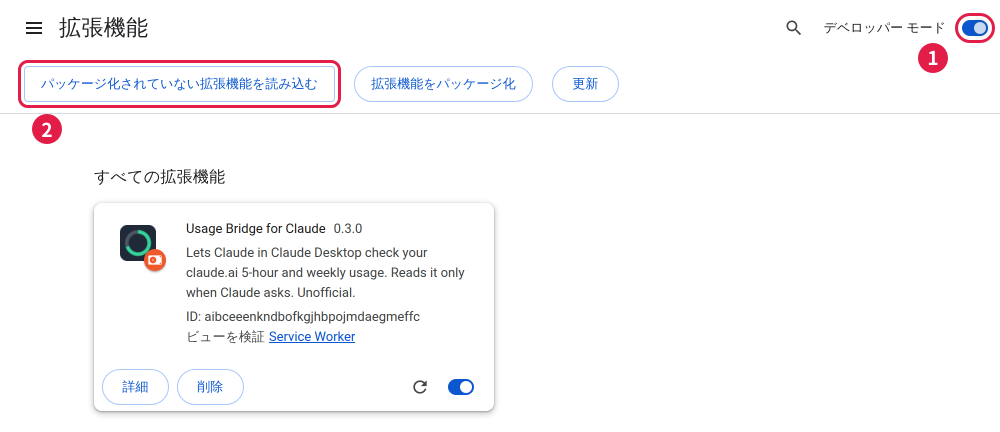
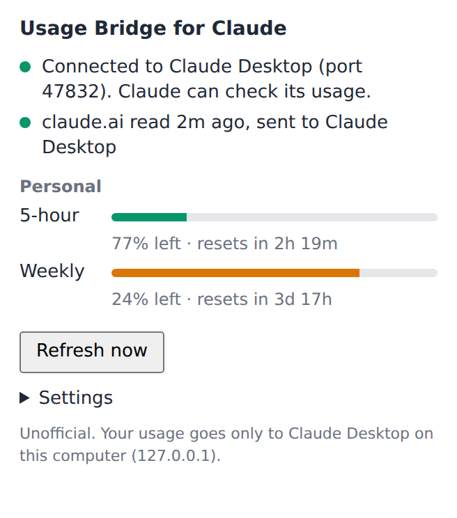

Claude Desktop 用の拡張機能（非公式）
Claude が、自分の「5時間制限」と「週間制限」の残りを確かめられるようにします。
Claude Desktop で Claude に「使用量の残りは？」と聞くと、5時間制限と週間制限があと何 % 残っているか、いつリセットされるかを答えてくれます。
会話の例（イメージ）
長い作業の前や途中で Claude が自分から残りを確かめ、上限に達する前に作業を保存してまとめる、といった使い方もできます（7 章）。
| 名前 | 内容 |
|---|---|
取扱説明書.pdf |
この説明書 |
claude-usage.mcpb |
Claude Desktop に入れる拡張機能「Claude Usage」 |
usage-bridge-for-claude（フォルダ） |
Chrome / Edge に入れる拡張機能「Usage Bridge for Claude」 |
claude-usage-skill.zip |
（任意）使用量の気にかけ方を Claude に教える Skill |
2 つの拡張機能は組で使います。どちらか片方だけでは動きません。
get_claude_usage というツールで残りを尋ねます。次の 6 つの手順で準備します（5 分ほど）。画面の表示名は、アプリのバージョンや表示言語によって少し違うことがあります。
claude-usage-checker.zip を展開します。
claude-usage-checker フォルダを、「ドキュメント」など、この先も消さない場所に移します。ブラウザは、手順 3 で選ぶフォルダから拡張機能を読み込み続けます。フォルダを削除したり移動したりすると動かなくなるので、「ダウンロード」フォルダの整理などで消さないよう注意してください。
claude-usage.mcpb をダブルクリックします。Claude Desktop
に拡張機能の画面が開くので、「インストール」（Install）を押します。設定欄（Organization、Local port）は空欄・既定値のままで構いません。
ダブルクリックで開かないとき：Claude Desktop の「設定」→「拡張機能」→「詳細設定」（Advanced settings）を開き、「Extension
Developer」の「Install Extension…」を押して claude-usage.mcpb を選びます。

chrome://extensions と入力して開きます。claude-usage-checker フォルダの中の
usage-bridge-for-claude フォルダを選びます。
Microsoft Edge の場合：edge://extensions を開き、「開発者モード」をオンにしてから「展開して読み込み」を押して、同じ
usage-bridge-for-claude フォルダを選びます。
同じブラウザで https://claude.ai を開き、ログインします（ログイン済みなら不要です）。ログインしたあとは、タブを閉じても構いません。
ツールバーの「Usage Bridge for Claude」のアイコンを押すと、次のような画面が開きます。

1 2 3 4 5 6Claude Desktop で新しいチャットを開き、「今の使用量の残りは？」と聞いてみてください。数秒で残りの % とリセットまでの時間が返ってくれば完了です。
初めてのときは、「Claude Usage」のツールを使ってよいか確認されることがあります。許可してください。
うまく動かないときは、9 章「困ったとき」を見てください。
ふだんどおり Claude に話しかけるだけです。たとえば：
同梱の Skill（claude-usage-skill.zip）を追加すると、Claude が長い作業の前や途中で自分から残りを確かめ、次のように振る舞うようになります。
| 状況 | Claude の振る舞い |
|---|---|
| 5時間制限の残りが 30% 以上 | ふだんどおり作業する |
| 5時間制限の残りが 10〜30% | 新しい大きな作業は控え、こまめに保存する |
| 5時間制限の残りが 10% 未満 | 今の作業を区切って保存し、終わったこと・残っていることとリセット時刻を伝える |
| 週間制限の残りが 10% 未満 | あなたに知らせる（リセットまで数日かかることがあるため） |
claude-usage-skill.zip を選びます。Skill を使うには、「コード実行とファイル作成」（Code execution and file creation）が有効になっている必要があります。Pro・Max は「設定」→「機能」（Capabilities）で有効にします。Team・Enterprise では組織の管理者が設定します。
| 場所 | 項目 | 内容 |
|---|---|---|
| Claude Desktop の「設定」→「拡張機能」→「Claude Usage」 | Organization | 個人のプランとチームなど、複数の組織に入っている場合に、使う組織の名前。空欄なら、5時間・週間の制限がある最初の組織を使います。 |
| Local port | 受け渡しに使うポート番号（既定は 47832）。ほかのアプリと重なる場合だけ変えます。 | |
| ブラウザの拡張機能の画面の「Settings」 | Port | Claude Desktop 側の Local port と同じ番号にして、「Save」を押します。 |
| こんなとき | こうしてください |
|---|---|
| ブラウザの拡張機能の画面の 1 行目が赤く、「Not connected to Claude Desktop」と表示される | Claude Desktop が起動していて、「Claude Usage」がオンになっているか確かめます。Claude Desktop を起動してからつながるまで、最大 1 分かかります（拡張機能の画面を開き直すと、すぐにつなぎ直します）。ポート番号を変えた場合は、両方を同じ番号にします。 |
| 2 行目が赤く、「Sign in to claude.ai in this browser」と表示される | そのブラウザで claude.ai にログインし直します。 |
| 2 行目が赤く、「Could not reach claude.ai」と表示される | インターネットにつながっているか確かめます。claude.ai のタブを開いた状態で「Refresh now」を押すと、読めることもあります。 |
| 5-hour・Weekly の横に「no limit」、または組織名の下に「No usage data」と表示される | その組織（Enterprise プランなど）には、5時間・週間の制限がありません。 |
| フォルダを選んだときに「マニフェスト ファイルが見つからないか、読み取ることができません」と表示される | claude-usage-checker フォルダではなく、その中の usage-bridge-for-claude フォルダを選びます。 |
Claude が「ブラウザの拡張機能につながっていない」（browser_not_connected）と答える |
Chrome / Edge を起動し、「Usage Bridge for Claude」がオンになっているか確かめます。 |
Claude が「古い値」（stale）だと答える |
その場では読めなかったので、前回の値を答えています。Claude が伝える理由（ブラウザが閉じている、ログインが切れているなど）を確かめます。 |
| Claude がツールを使わない、知らないと答える | 「Claude Usage」がオンになっているか確かめてから、新しいチャットで「get_claude_usage ツールで使用量を確認して」と頼みます。 |
| ブラウザの起動時に「開発者モードの拡張機能を無効にする」という案内が出る | 「無効にする」は押さずに閉じます。 |
| フォルダを移動・削除してしまった | ブラウザの拡張機能の一覧（chrome://extensions）で「Usage Bridge for Claude」を削除し、手順 3 をやり直します。 |
どれにも当てはまらないときは、Claude Desktop とブラウザを再起動してみてください。
claude-usage-checker.zip を展開します。claude-usage.mcpb をダブルクリックして、インストールし直します。claude-usage-checker フォルダを削除し、新しいフォルダを同じ場所に置きます。chrome://extensions）で、「Usage Bridge for Claude」の更新ボタン（↻）を押します。claude-usage-checker フォルダを削除します。%LOCALAPPDATA%\claude-usage-checker、Mac はホームフォルダの
.cache/claude-usage-checker です。
claude-usage-checker バージョン 0.3.0
最新版と問い合わせ先：https://github.com/60fullerene/claude-usage-checker